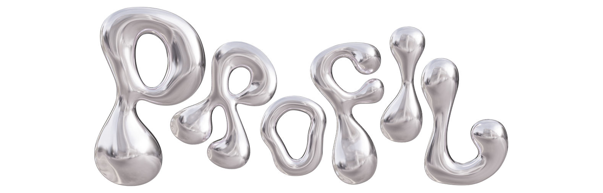

Formation, expériences et projet professionnel.
Savoir-faire
Compétences Clés
Création Visuelle & Design · Print et Digital
- Production de supports variés : signalétique interne et externe, affiches, sites web via Adobe Suite et Canva
- Pilotage de l'identité visuelle complète d'événements institutionnels (ACD TC 2025)
- Maîtrise de la chaîne graphique de la conception à l'impression (fichiers print calibrés, déclinaisons web)
Stratégie Digitale, Web & Intelligence Artificielle
- Développement et intégration web : création de sites via Visual Studio Code et Antigravity
- Maîtrise des outils IA génératifs : vidéo cinématique (Sora), visuels publicitaires (Firefly), production stratégique (Claude Code, Gemini)
- Veille active sur les tendances numériques et intégration des workflows IA pour accélérer la production
Gestion de Projet, Communication & Coordination
- Pilotage logistique et organisationnel au sein d'un service communication (stage 3 mois, IUT Toulon 2026)
- Élaboration de contenus éditoriaux pour un site institutionnel multi-pages : rédaction, UX, audit Figma, corrections HTML/CSS
- Coordination d'un événement national en autonomie (ACD TC) : accueil, flux, régie terrain
Historique
Expériences
2026
3 mois
Assistant Communication
Service Communication · IUT de Toulon, La Garde
Stage de fin d'études au sein du Service Communication de l'IUT. Production de supports graphiques (affiches, signalétique, visuels web), rédaction de contenus éditoriaux pour le site institutionnel, audit UX et corrections HTML/CSS sur plusieurs pages. Participation à la coordination d'événements internes et gestion des délais en environnement professionnel réel.
2025
2 mois
Chargé de Communication Visuelle
IUT de Toulon · Département TC, La Garde
Mission centrale : conception de l'identité visuelle complète de l'Assemblée des Chefs de Département TC 2025, événement national réunissant les responsables pédagogiques de tous les BUT TC de France. Production de signalétique, carnets illustrés, site web événementiel, badges et supports print. Coordination logistique sur le terrain.
2024
1 mois
Stagiaire en Vente
Speedway · Équipementier Moto, La Garde
Première expérience en point de vente spécialisé. Conseil client adapté au profil (débutant ou expérimenté), argumentation produit (casques, protections, textile), gestion des encaissements et suivi d'indicateurs commerciaux hebdomadaires.
2021–2023
Coach Sportif
Azuréa Club · Golfe Juan, Vallauris
Entraîneur basketball pendant deux saisons. Gestion d'un groupe de joueurs, préparation des séances, animation des entraînements et analyse du jeu en temps réel. Expérience de leadership direct qui a façonné ma façon de travailler en équipe.
Depuis
2020
Saisonnier
Handiplagiste
CCAS d'Antibes
Accompagnement de personnes en situation de handicap pour l'accès à la plage — mise à l'eau, surveillance, matériel adapté. Sens de l'écoute, gestion du risque, contact humain au centre de chaque interaction.
Après le BUT
Projet à l'issue du BUT
Master Communication Management Datas CMD
À l'issue du BUT TC, je souhaite intégrer un Master Communication Management Datas en alternance. Cette formation prolonge directement ma trajectoire : maîtrise des outils digitaux, analyse de données, stratégie de communication, trois axes sur lesquels j'ai bâti mes compétences clés tout au long du BUT 3.